REST¶
Business Problem¶
- We try to build a client app that provides weather report for a city, so we need to get weather data from an external service.
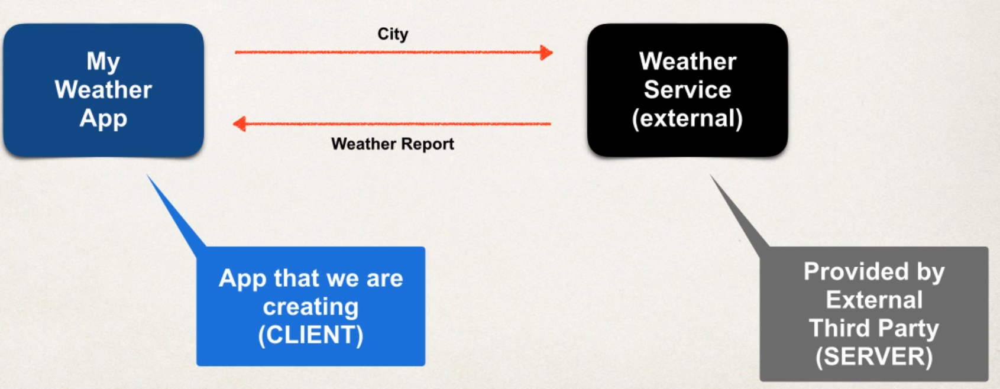
Questions¶
- How will we connect to the weather service?
- We make REST API calls over HTTP
- What Programming language we use?
- REST is language independent
- What is the data format?
- REST can use any data format (JSON most popular)
Possible Solution¶
- Use API of openweathermap.org
Request
api.openweathermap.org/data/2.5/weather?q={city}
Response
{
"temp": 14,
"temp_min": 9,
...
}
Remember¶
- All we need to care about is that the programming language we are using can process the data format we are getting back.
Dont get confused...¶
- REST API, RESTful API, REST Web Services, ... are all the same
JSON¶
- Curley braces define objects
- Object members are name / value pairs
- Name is always in ""
{
"temp": 14,
"temp_min": 9,
"address": {
"street": "Lerchenstraße",
...
},
...
}
Java JSON Data Binding¶
- Data binding is the process of converting JSON to Java POJO (Plain old Java Class)and vice versa.
- Also known as mapping / serialization, marshalling... its all the same
- Spring uses the Jackson Project behind the scenes
- Jackson handles data binding between JSON and Java POJO
- https://github.com/FasterXML/jackson-databind
- In conversion, Jackson will call appropriate getter / setters. It does NOT access private fields directly!
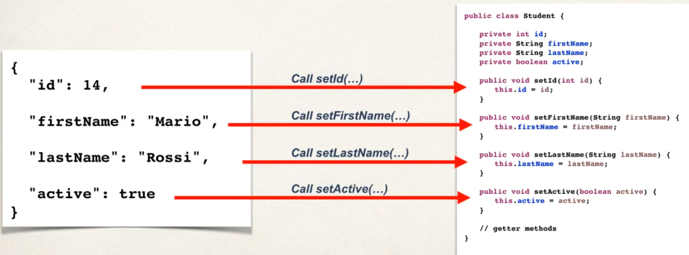
import com.fasterxml.jackson.databind.ObjectMapper;
public class Driver {
public statis void main(String[] args) throws Exception {
ObjectMapper mapper = new ObjectMapper();
// Read data from json file, create an instance of this class and populate it
Student myStudent = mapper.readValue(new File("data/sample.json"), Student.class);
}
}
Vice versa:
import com.fasterxml.jackson.databind.ObjectMapper;
public class Driver {
public statis void main(String[] args) throws Exception {
ObjectMapper mapper = new ObjectMapper();
// Read data from json file, create an instance of this class and populate it
Student myStudent = mapper.readValue(new File("data/sample.json"), Student.class);
mapper.enable(SerializationFeature.INDENT_PUTPUT); // just prettier writing
mapper.writeValue(new File("data/output.json"), myStudent);
}
}
Spring & Jackson¶
- When building Spring REST apps, Spring will automatically handle Jackson integration
- JSON data being passed to REST controller is converted to POJO
- Java object being returned from REST controller is converted to JSON
Ignore JSON properties that we don't want to use¶
@JsonIgnoreProperties(ignoreUnknown = true)
public class Student {
...
}
HTTP¶
- Most common use of REST is over HTTP
- CRUD operations
- POST (Create new entity)
- GET (Read a list of entities)
- PUT (Update entity)
- DELETE (Delete entity)
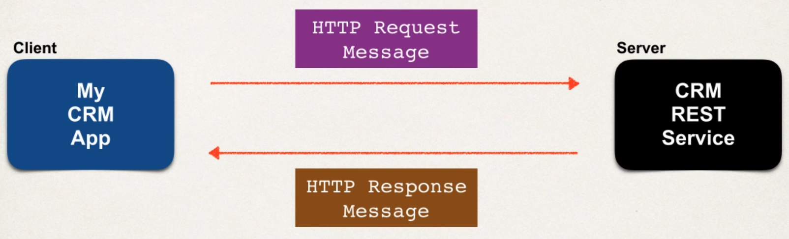
What's in the messages?¶
- Request Message
- Request line: HTTP command
- Header variable: Request metadata
- Message body: contents of message as JSON
- Response Message
- Response line: Server protocol and status code (404, 500, etc)
- Header variable: Response metadata (if its XML or JSON, ...)
- Message body: contents of message
- MIME Content Types
- Message format is described by MIME content type (Multipurpose Internet Mail-Extension)
- Basic syntax:
type/sub-type - Examples:
text/htmlortext/plain. Browser will render based on HTML tags or will just render plain text. - Client-Tool
- Curl
- Postman
- ...
Spring REST Controller¶
@RestControllerits an extension ofController- Handles REST requests and response
- Will automatically convert Java POJOs to JSON
- as long as Jackson project is on the classpath or pom.xml
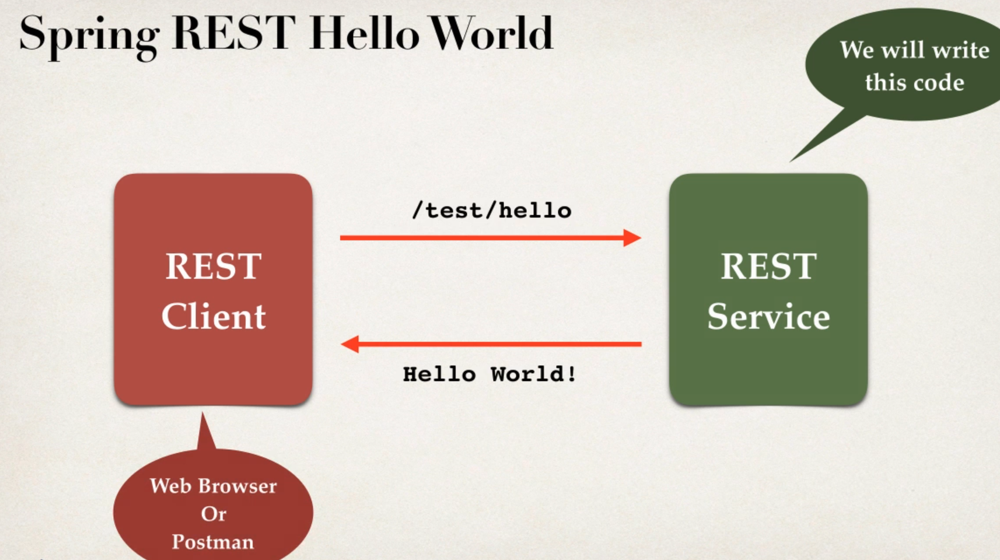
@RestController
@RequestMapping("/test")
public class DemoRestController {
@GetMapping("/hello")
public String sayHello() {
return "Hello World";
}
}
- Access REST endpoint at
/test/hello
Development Process¶
- Add Maven / Gradle dependency for Spring MVC and Jackson
- Add code for Java Config:
@Configuration - Add code for Java Config: Servlet Initializer
- Create Spring REST Service using
@RestController
Add Maven / Gradle dependency for Spring MVC and Jackson
...
Add code for Java Config: @Configuration
@Configuration
@EnableWebMvc
@ComponentScan(basePackages="com.dstoecklein.springdemo")
public class DemoAppConfig {
...
}
Add code for Java Config: Servlet Initializer
public class MySpringMvcDispatcherServletInitializer extends AbstractAnnotationConfigDispatcherServletinitializer {
@Override
protected Class<?>[] getRootConfigClasses() {
return null;
}
@Override
protected Class<?>[] getServletConfigClasses() {
return new Class[] { DemoAppConfig.class };
}
@Override
protected String[] getServletMappings() {
return new String[] { "/" };
}
}
Create Spring REST Service using @RestController
@RestController
@RequestMapping("/test")
public class DemoRestController {
@GetMapping("/hello")
public String sayHello() {
return "Hello World";
}
}
Creating a REST Service¶
- We are going to create a Service for Students
- We will make GET Requests via Postman on this Service
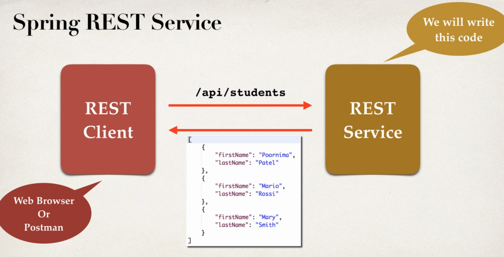
- Will return
List<Student>, need to convert to JSON with Jackson - If Jackson is a dependency via Maven or Gradle, then
- JSON data passed to a
@RestControlleris automatically converted to POJO - POJO passed to a
@RestControlleris automatically converted to JSON
Development Process¶
- Create Java POJO Class for Students (we have done this earlier)
- Create
@RestController
@RestController
@RequestMapping("/api")
public class StudentRestController {
@GetMapping("/students")
public List<Student> getStudents() {
List<Student> theStudents = new ArrayList<>();
// hardcoded for now
thestudents.add(new Student("Max", "Müller"));
thestudents.add(new Student("Bob", "Allh"));
return theStudents;
}
}
Path Variables¶
- Retrieve a single Student by id
/api/students/{studentId}, thatstudentIdis called PathVariable
Development Process¶
- Add request mapping to our Service
- Bind path variable using
@PathVariable
@RestController
@RequestMapping("/api")
public class StudentRestController {
@GetMapping("/students/{studentId}")
public Student getStudent(@PathVariable int studentId) {
List<Student> theStudents = new ArrayList<>();
//populate theStudents
}
return theStudents.get(studentId);
}
Exception Handling¶
- If we passed over a bad studentId, we received a
Status 500error - We dont want that, because it exposes a lot of sensitive data
- We want to return error as JSON instead
{
"status": 404,
"message": "Student id not found",
"timeStamp": 15261454867
}
Development process¶
- Create custom error response class
- Create custom exception class
- Update REST service to throw exception
- Add an exception handler method using
@ExceptionHandler
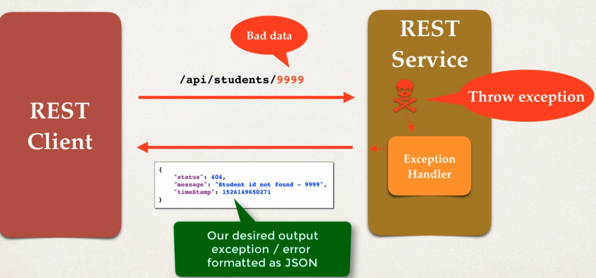
Create custom error response class (we will define it as POJO)
public class StudentErrorResponse {
private int status;
private String message;
private long timeStamp;
// constructor + getter/setter
}
Create custom exception class (will be used by our REST service)
public class StudentNotFoundException extends RuntimeException {
public StudentNotFoundException(String message) {
super(message);
}
}
Update REST service to throw exception
@RestController
@RequestMapping("/api")
public class StudentRestController {
...
if ( (studentId >= theStudents.size() ) || (studentId < 0) ) {
throw new StudentNotFoundException("Student id not found - " + studentId);
}
// Happy Path
return theStudents.get(studentId);
}
Add an exception handler method using @ExceptionHandler (Will response a ResponseEntity which is a wrapper for the HTTP response object)
@RestController
@RequestMapping("/api")
public class StudentRestController {
...
@ExceptionHandler
public ResponseEntity<StudentErrorResponse> handleException(StudentNotFoundException exc) {
StudentErrorResponse error = new StudentErrorResponse();
error.setStatus(HttpStatus.NOT_FOUND.value());
error.setMessage(exc.getMessage());
error.setTimeStamp(System.currentTimeMillis());
return new ResponseEntity<>(error, HttpStatus.NOT_FOUND);
}
}
Edge cases¶
- What happens if we enter a String:
/api/students/fdsjflsd - It will return
400 Bad Request
@RestController
@RequestMapping("/api")
public class StudentRestController {
...
// add another handler to catch all
@ExceptionHandler
public ResponseEntity<StudentErrorResponse> handleException(Exception exc) {
StudentErrorResponse error = new StudentErrorResponse();
error.setStatus(HttpStatus.BAD_REQUEST.value());
error.setMessage(exc.getMessage());
error.setTimeStamp(System.currentTimeMillis());
return new ResponseEntity<>(error, HttpStatus.BAD_REQUEST);
}
}
Global Exception Handling¶
- Exception handler code is only for the specific REST controller
- Cant be reused by other controllers, like in large projects
- We can make use of
@ControllerAdvice - Pre-process requests to controller
- Post-process responses to handle exception
- Real-time use of AOP
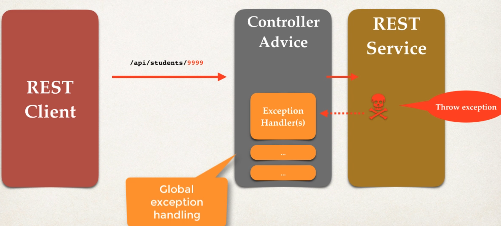
Development process¶
- Create new
@ControllerAdvice - Refactor our REST service to remove exception handling code
- Add exception handling code to
@ControllerAdvice
Create new @ControllerAdvice
@ControllerAdvice
public class StudentRestExceptionHandler {
...
}
Refactor our REST service to remove exception handling code
...
Add exception handling code to @ControllerAdvice
@ControllerAdvice
public class StudentRestExceptionHandler {
@ExceptionHandler
public ResponseEntity<StudentErrorResponse> handleException(StudentNotFoundException exc) {
StudentErrorResponse error = new StudentErrorResponse();
error.setStatus(HttpStatus.NOT_FOUND.value());
error.setMessage(exc.getMessage());
error.setTimeStamp(System.currentTimeMillis());
return new ResponseEntity<>(error, HttpStatus.NOT_FOUND);
}
}
REST API Design¶
- Who and how will they use our API -> Design based on this
- E.g. for a CRM system
- Full CRUD support for our Customers
- Most prominent "noun" is "customer"
- Endpoint convention:
customer
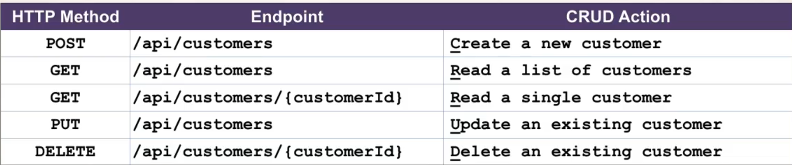
Anti-Patterns¶
- Don't include actions in the endpoint
- Instead, use HTTP methods to assign actions
- Above, our endpoints don't have any actions in the names
Examples¶
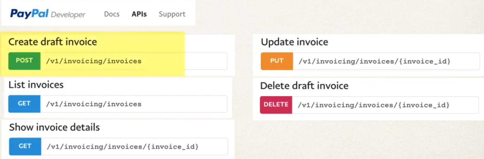
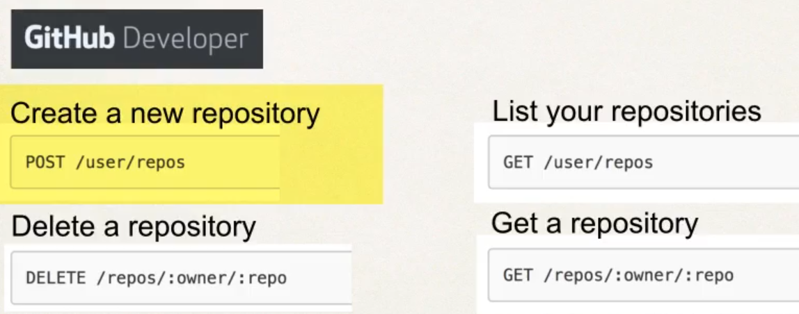
CRUD Project¶
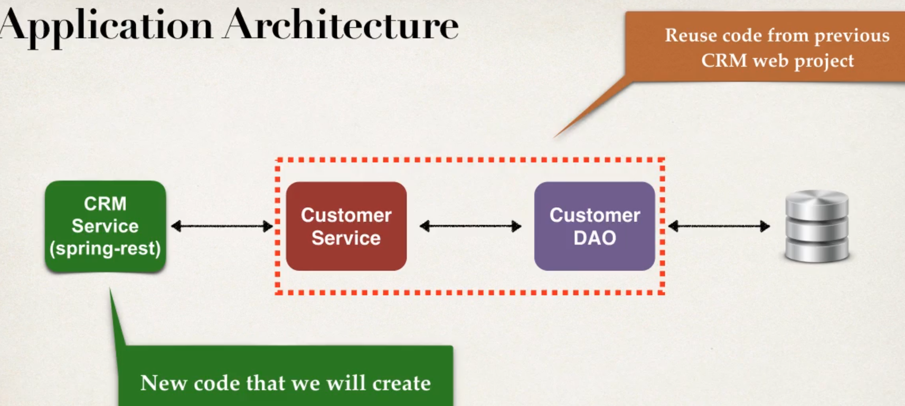
Development Process¶
- Get customers
- Get single customer by ID
- Add a new customer
- Update customer
- Delete customer